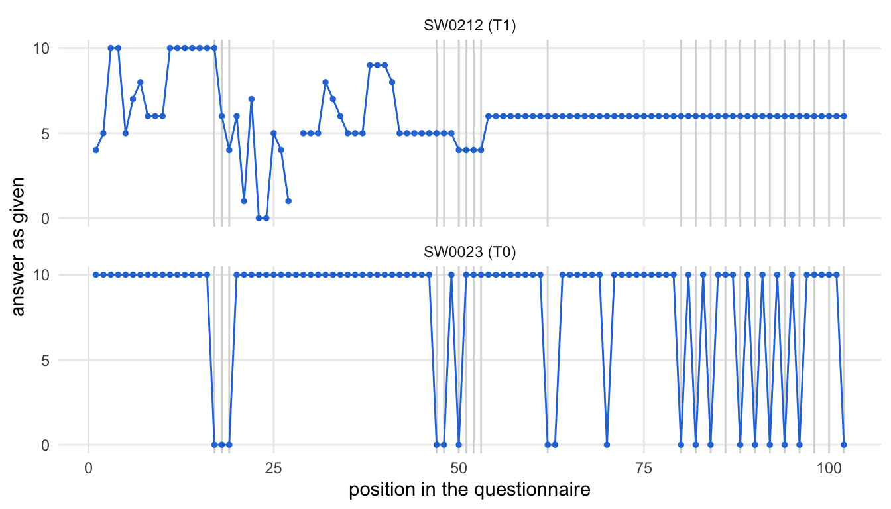
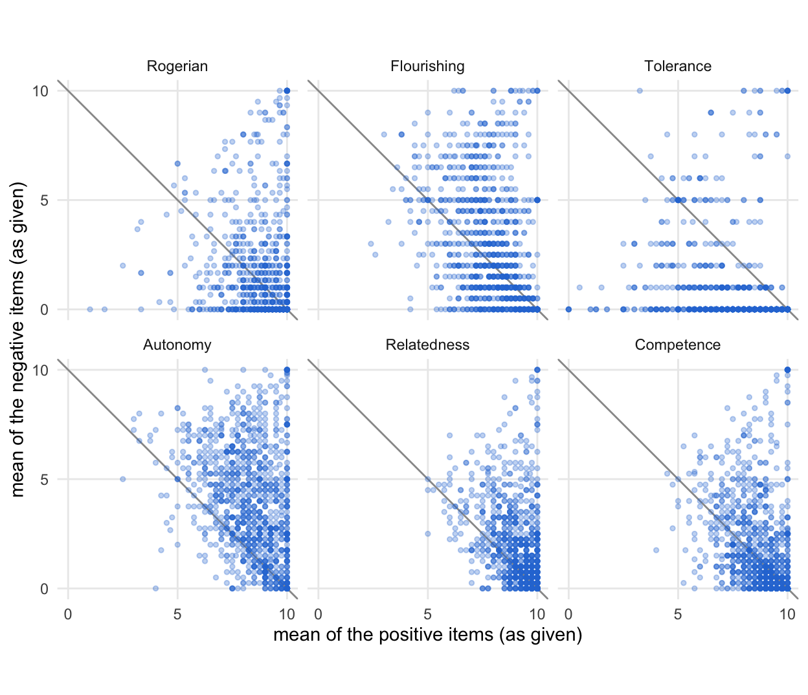
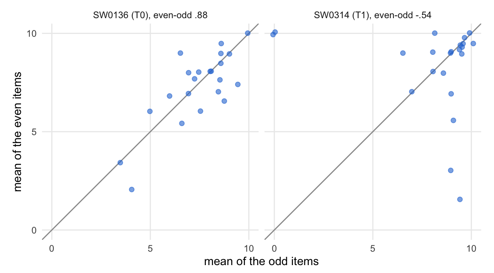
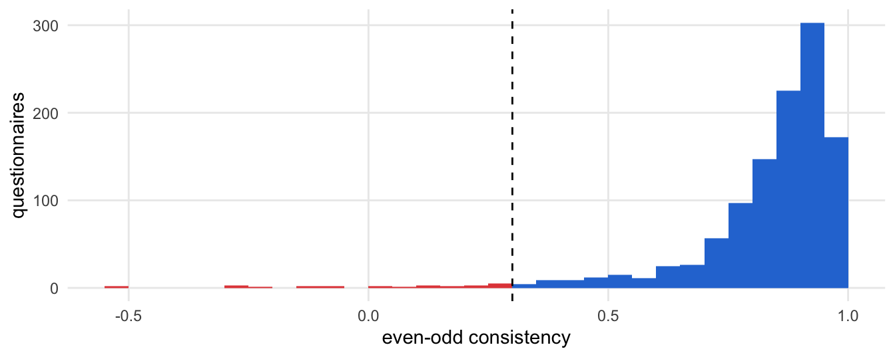
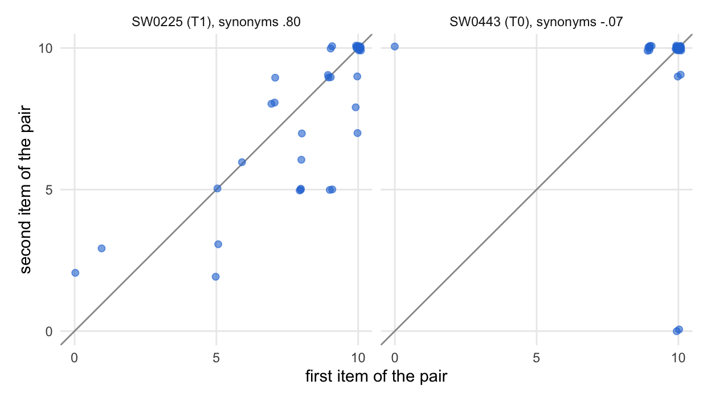
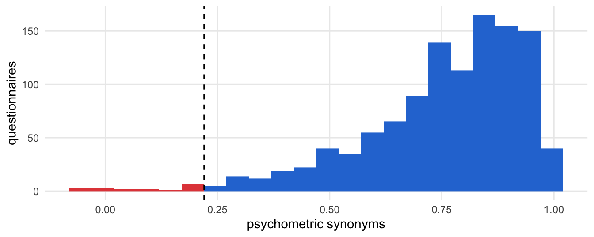

source("R/packages.R") # all packages (Chapter 1)
source("R/settings.R") # waves, conditions, folders (Chapter 1)
df <- readRDS("cache/df.rds") # one row per questionnaire (Chapter 2)
df_wide <- readRDS("cache/df_wide.rds") # one row per person (Chapter 2)
item_names <- names(select(df, ListenOther1:CompetenceNonFrustrated4))
source("R/scales.R") # the 23 scales (Chapter 2)4. Data quality
NoteAbout this chapter
Screens every questionnaire for careless answering with four indicators, combines them into two flags and turns the flags into the sample sets S8 and S9, on which Chapter 14 re-estimates the training effects. No questionnaire is removed here. The chapter also repeats the search for questionnaires entered twice on the analysis file. Every screening step goes through the same six steps, from the answers it looks at to what follows from it; a table at the end puts all steps side by side. Feeds the data-quality paragraph of the Method section and the robustness table.
4.1 How each screening step is examined
What happens in each step of the screening? The same six steps in three parts, always in the same order: the problem, the rule and the result. The diagram shows the path; the list below describes each step.
flowchart TB
subgraph PROBLEM["the problem"]
direction LR
S1["<b>Step 1</b><br>what the data look like"] --> S2{{"<b>Step 2</b><br>the problem:<br>what does careless<br>answering leave?"}}
end
subgraph RULE["the rule"]
direction LR
S3["<b>Step 3</b><br>the rule:<br>index and cutoff"] --> S4["<b>Step 4</b><br>the evidence<br>per case"]
end
subgraph RESULT["the result"]
direction LR
S5["<b>Step 5</b><br>before and after:<br>how the count moves"] --> S6["<b>Step 6</b><br>what follows"]
end
PROBLEM --> RULE
RULE --> RESULT
classDef all fill:#efeff2,stroke:#8a8a8a,color:#1d1d1f
classDef verdict fill:#ffffff,stroke:#1d1d1f,color:#1d1d1f
class S1,S2,S3,S4,S5 all
class S6 verdict
style PROBLEM fill:#fafafa,stroke:#8a8a8a
style RULE fill:#fafafa,stroke:#8a8a8a
style RESULT fill:#fafafa,stroke:#8a8a8a
The six steps in detail:
The problem:
- What the data look like. The answers the step looks at: the answers as they were ticked, in the order of the questionnaire, or the items as analysed, after Chapter 2 turned the reverse-keyed items around.
- The problem. What careless answering leaves in these answers, and why attentive answering can look much the same.
The rule:
- The rule. The index, written out, and the cutoff that marks a questionnaire: a run of 20 or more identical answers that passes a reverse-keyed item (long string); a distance of at least 2.5 SD above the block mean in two or more of six blocks (agreeing with opposites); an even-odd consistency below .30; a psychometric-synonyms correlation below .22. Three supplementary indicators (Mahalanobis p < .001, variability below the 2.5th percentile, more than 25 missing items) are reported but mark nothing. Two questionnaires count as entered twice when they agree on at least 95 % of at least 80 items answered in both and their answers vary.
- The evidence per case. The questionnaires the rule marks, by pseudonym and wave, with the values that put them there.
The result:
- Before and after. How many questionnaires the rule marks, and how that number moves with the cutoff, with the rule, or across the conditions and waves.
- What follows. Where the result goes: into the two flags, the sample sets S8 and S9, and Chapter 14.
4.2 Data and tools
Which data? One row per questionnaire. Most indicators of careless answering look at the answers as they were ticked, in the order of the questionnaire. Chapter 2 turned the 22 reverse-keyed items around; for the screening they are turned back. keyed holds the items as analysed, answers the answers as given. The columns of the data follow the order of the printed Serbian questionnaire.
# the 22 reverse-keyed items, under their names from Chapter 2
reversed_items <- c("NoAlienation1", "NoAlienation2",
"NoIsolation1", "NoIsolation2",
"Flourishing5", "Flourishing6", paste0("Rogerian", 7:9),
"ToleranceDiversity1",
str_subset(item_names, "NonFrustrated"))
# one row per questionnaire, the 102 items in the order of the questionnaire
keyed <- df |> select(all_of(item_names))
answers <- keyed |> mutate(across(all_of(reversed_items), \(x) 10 - x))Which tools? Every index is written out for its indicator. Only the figures use small functions, defined once here:
# the answers of some questionnaires as given, in the order of the
# questionnaire, one panel each in the order given; grey lines mark the
# reverse-keyed items
plot_sequence <- \(sequences) {
sequences |>
mutate(questionnaire = fct_inorder(questionnaire)) |>
pivot_longer(-questionnaire, names_to = "item", values_to = "answer") |>
mutate(position = match(item, item_names)) |>
ggplot(aes(position, answer)) +
geom_vline(xintercept = which(item_names %in% reversed_items),
colour = "grey85") +
geom_line(colour = "#2a78d6", linewidth = .5) +
geom_point(colour = "#2a78d6", size = 1, na.rm = TRUE) +
facet_wrap(~ questionnaire, ncol = 1) +
scale_y_continuous(breaks = c(0, 5, 10)) +
labs(x = "position in the questionnaire", y = "answer as given") +
theme_minimal(base_size = 11) +
theme(panel.grid.minor = element_blank())
}# the mean of the positive against the mean of the negative answers of each
# block, one point per questionnaire; on the grey line they add up to 10
plot_opposites <- \(means) {
means |>
filter(!is.na(positive), !is.na(negative)) |>
ggplot(aes(positive, negative)) +
geom_abline(intercept = 10, slope = -1, colour = "grey60") +
geom_point(colour = "#2a78d6", alpha = .3, size = 1) +
facet_wrap(~ block, ncol = 3) +
coord_equal(xlim = c(0, 10), ylim = c(0, 10)) +
scale_x_continuous(breaks = c(0, 5, 10)) +
scale_y_continuous(breaks = c(0, 5, 10)) +
labs(x = "mean of the positive items (as given)",
y = "mean of the negative items (as given)") +
theme_minimal(base_size = 11) +
theme(panel.grid.minor = element_blank())
}# within single questionnaires: each value against its counterpart (the two
# halves of a scale, the two items of a pair), one panel per questionnaire
# in the order given; points on the grey line agree
plot_within <- \(points, x_label, y_label) {
points |>
filter(!is.na(x), !is.na(y)) |>
mutate(questionnaire = fct_inorder(questionnaire)) |>
ggplot(aes(x, y)) +
geom_abline(colour = "grey60") +
geom_point(colour = "#2a78d6", alpha = .6, size = 1.8,
position = position_jitter(width = .1, height = .1,
seed = 1)) +
facet_wrap(~ questionnaire) +
coord_equal(xlim = c(0, 10), ylim = c(0, 10)) +
scale_x_continuous(breaks = c(0, 5, 10)) +
scale_y_continuous(breaks = c(0, 5, 10)) +
labs(x = x_label, y = y_label) +
theme_minimal(base_size = 11) +
theme(panel.grid.minor = element_blank())
}# an index over all questionnaires; red the questionnaires below the
# cutoff (dashed line)
plot_index <- \(index, cutoff, label) {
tibble(index) |>
filter(!is.na(index)) |>
ggplot(aes(index, fill = index < cutoff)) +
geom_histogram(binwidth = .05, boundary = cutoff) +
geom_vline(xintercept = cutoff, linetype = "dashed") +
scale_fill_manual(values = c(`FALSE` = "#2a78d6", `TRUE` = "#e34948"),
guide = "none") +
labs(x = label, y = "questionnaires") +
theme_minimal(base_size = 11) +
theme(panel.grid.minor = element_blank())
}4.3 Indicators of careless answering
Which indicators? The four preregistered indicators, each looking for one trace of careless answering: long strings of the same answer, agreeing with an item and with its opposite, and two kinds of inconsistent profile (even-odd consistency and psychometric synonyms). Three supplementary indicators follow; they are reported but mark nothing.
Long strings
Its path through the steps. One row per step below; every step uses all questionnaires:
| Step | Question | Result | Next |
|---|---|---|---|
| 2 | What does careless answering leave? | long runs of one answer; but attentive runs are common where items point the same way | the rule |
| 3 | What is the index, and its cutoff? | the longest run that passes a reverse-keyed item; 20 or more | the evidence |
| 4 | Which questionnaires does the rule mark? | each with its run: length, answer, items | before and after |
| 5 | Where to draw the line? | the count against the length of the run | what follows |
| 6 | Where next? | the lenient and the strict flag (4.4) | the next indicator |
The problem · Steps 1 and 2
Step 1 · What the data look like all questionnaires
In which order were the items answered? The 102 items stand in the order of the printed questionnaire. Between the reverse-keyed items lie stretches of items that are all worded the same way:
# the position of every item in the questionnaire
item_order <- tibble(position = seq_along(item_names), item = item_names,
reversed = item %in% reversed_items)
# stretches of items without a reverse-keyed item, from two items on
item_order |>
mutate(stretch = consecutive_id(reversed)) |>
filter(!reversed) |>
summarise(from = first(item), to = last(item), items = n(),
.by = stretch) |>
filter(items >= 2) |>
select(-stretch)| from | to | items |
|---|---|---|
| ListenOther1 | Rogerian6 | 16 |
| ParadoxMindset1 | Flourishing4 | 27 |
| Empowerment1 | Agency3 | 8 |
| ToleranceDiversity2 | AutonomySatisfaction1 | 17 |
The widest stretch runs over 27 items, from Paradox Mindset 1 to Flourishing 4. In the 24 need-satisfaction items at the end, a positively worded and a reverse-keyed item alternate.
Next → Step 2, the problem: How long are the runs, wherever they fall?
Step 2 · The problem all questionnaires
How long are the runs, wherever they fall? A run is a series of identical answers in the order of the questionnaire; a missing answer ends a run. Every run of every questionnaire, and the longest run of each:
# every run of identical answers, one row per run; a missing answer (set to
# -1 here) ends a run and is no run itself
ls_runs <- as.matrix(answers) |>
asplit(1) |>
map(\(answer) rle(replace_na(as.vector(answer), -1))) |>
map(\(r) tibble(length = r$lengths, value = r$values,
end = cumsum(r$lengths))) |>
list_rbind(names_to = "row") |>
mutate(start = end - length + 1) |>
filter(value != -1)
# the longest run of each questionnaire (NA for one without any answer)
ls_any <- tibble(row = seq_len(nrow(answers))) |>
left_join(summarise(ls_runs, longest = max(length), .by = row),
by = "row") |>
pull(longest)
tibble(ls_any) |>
describe(ls_any)
Descriptive Statistics
----------------------
-----------------------------------------------------------------------
Variable Mean Median SD Range IQR Skewness N Missing
-----------------------------------------------------------------------
ls_any 10.418 9.000 4.898 47.000 3.000 2.630 1140 0
-----------------------------------------------------------------------Long runs are common: 515 questionnaires have a run of ten or more identical answers somewhere, 35 one of 20 or more. Within a stretch of items worded the same way, such a run is what an attentive person who agrees with all of them gives as well. Careless answering shows where a run goes on across a reverse-keyed item, where an attentive person would switch sides.
Next → Step 3, the rule: Which runs count?
The rule · Steps 3 and 4
Step 3 · The rule all questionnaires
Which runs count? Only runs that pass a reverse-keyed item. The index is the longest such run; a run of 20 or more marks a long string:
# the positions of the 22 reverse-keyed items in the questionnaire
reversed_at <- which(item_names %in% reversed_items)
# does a run pass one of them?
ls_runs <- ls_runs |>
mutate(through_reversed = map2_lgl(start, end, \(s, e)
any(between(reversed_at, s, e))))
# the longest run through a reverse-keyed item (0 if no run passes one)
ls_reversed <- tibble(row = seq_len(nrow(answers))) |>
left_join(ls_runs |>
summarise(longest = max(c(0L, length[through_reversed])),
.by = row),
by = "row") |>
pull(longest)Which long runs does the rule leave aside? The runs of 20 or more that pass no reverse-keyed item:
ls_runs |>
filter(length >= 20, !through_reversed) |>
transmute(id = df$id[row], wave = df$Occasion[row], run = length,
answer = value, from = item_names[start], to = item_names[end])| id | wave | run | answer | from | to |
|---|---|---|---|---|---|
| SW0023 | T0 | 27 | 10 | ParadoxMindset1 | Flourishing4 |
| SW0037 | T2 | 21 | 5 | ParadoxMindset3 | Resonance8 |
| SW0081 | T0 | 23 | 10 | ParadoxMindset5 | Flourishing4 |
| SW0081 | T1 | 23 | 10 | ParadoxMindset5 | Flourishing4 |
| SW0090 | T0 | 23 | 10 | ParadoxMindset5 | Flourishing4 |
| SW0090 | T1 | 23 | 10 | ParadoxMindset5 | Flourishing4 |
| SW0107 | T3 | 22 | 10 | ParadoxMindset5 | Flourishing3 |
| SW0130 | T3 | 23 | 9 | ParadoxMindset5 | Flourishing4 |
| SW0266 | T3 | 27 | 10 | ParadoxMindset1 | Flourishing4 |
| SW0286 | T3 | 23 | 10 | ParadoxMindset5 | Flourishing4 |
| SW0315 | T3 | 27 | 10 | ParadoxMindset1 | Flourishing4 |
| SW0351 | T2 | 23 | 9 | ParadoxMindset1 | Resonance8 |
| SW0404 | T1 | 20 | 10 | ParadoxMindset1 | Resonance5 |
All of them lie in the widest stretch, between Paradox Mindset and Flourishing. None of them is careless by itself: an attentive person can give the same answer to 20 or more items in a row that are all worded the same way.
Next → Step 4, the evidence per case: Which questionnaires does the rule mark?
Step 4 · The evidence per case all questionnaires
Which questionnaires does the rule mark? For each, its longest run through a reverse-keyed item: how long, which answer, and from which item to which:
ls_cases <- ls_runs |>
filter(through_reversed) |>
slice_max(length, n = 1, by = row, with_ties = FALSE) |>
filter(length >= 20) |>
transmute(row, id = df$id[row], wave = df$Occasion[row],
Municipality = df$Municipality[row], run = length,
answer = value, from = item_names[start],
to = item_names[end]) |>
arrange(desc(run))
ls_cases |>
select(-row)| id | wave | Municipality | run | answer | from | to |
|---|---|---|---|---|---|---|
| SW0212 | T1 | Užice | 49 | 6 | Empowerment1 | CompetenceNonFrustrated4 |
| SW0265 | T2 | NoviPazar | 49 | 5 | Empowerment1 | CompetenceNonFrustrated4 |
| SW0377 | T1 | Šid | 43 | 10 | ListenOther2 | Flourishing2 |
| SW0025 | T2 | NoviPazar | 39 | 10 | ToleranceDiversity3 | CompetenceNonFrustrated4 |
| SW0003 | T2 | Vlasotince | 36 | 10 | ToleranceDiversity3 | RelatednessSatisfaction4 |
| SW0315 | T0 | Prijepolje | 35 | 10 | ListenOther1 | Resonance1 |
| SW0172 | T2 | Prijepolje | 34 | 10 | IntellectualCapital3 | CompetenceNonFrustrated4 |
| SW0221 | T1 | Prijepolje | 34 | 10 | ListenOther1 | IntellectualHumility6 |
| SW0315 | T1 | Prijepolje | 34 | 10 | ListenOther1 | IntellectualHumility6 |
| SW0433 | T2 | Šabac | 32 | 5 | Rogerian4 | Flourishing3 |
| SW0419 | T3 | Vlasotince | 31 | 10 | Flourishing7 | AutonomySatisfaction1 |
| SW0214 | T2 | Prijepolje | 30 | 10 | ToleranceDiversity3 | RelatednessSatisfaction3 |
| SW0090 | T2 | Vršac | 29 | 10 | NoIsolation2 | RelatednessSatisfaction1 |
| SW0393 | T2 | Požarevac | 29 | 10 | KamaMuta1 | IntellectualHumility6 |
| SW0016 | T3 | Raška | 28 | 10 | womenAttitude6 | CompetenceNonFrustrated4 |
| SW0180 | T3 | Kikinda | 28 | 9 | KamaMuta2 | IntellectualHumility6 |
| SW0332 | T3 | Vlasotince | 28 | 10 | Empowerment1 | RelatednessSatisfaction1 |
| SW0332 | T2 | Vlasotince | 25 | 10 | ToleranceDiversity2 | RelatednessSatisfaction2 |
| SW0404 | T0 | Vlasotince | 25 | 10 | ToleranceDiversity2 | RelatednessSatisfaction2 |
| SW0404 | T1 | Vlasotince | 25 | 10 | ToleranceDiversity2 | RelatednessSatisfaction2 |
| SW0404 | T2 | Vlasotince | 25 | 10 | ToleranceDiversity2 | RelatednessSatisfaction2 |
| SW0003 | T1 | Vlasotince | 21 | 10 | IntellectualCapital1 | RelatednessSatisfaction2 |
| SW0089 | T1 | NoviPazar | 20 | 10 | CompetenceSatisfaction1 | CompetenceNonFrustrated4 |
What does a long string look like? The answers of the questionnaire with the longest run through a reverse-keyed item, next to the questionnaire with the longest run that passes none:
ls_contrast <- c(ls_cases$row[1],
ls_runs |>
filter(!through_reversed) |>
slice_max(length, n = 1, with_ties = FALSE) |>
pull(row))
answers |>
mutate(questionnaire = str_c(df$id, " (", df$Occasion, ")")) |>
slice(ls_contrast) |>
plot_sequence()
In the first questionnaire the same answer runs on over 49 items and across several reverse-keyed items (grey lines). In the second, the answers stay at the top through the widest stretch, but turn at the reverse-keyed items on either side of it.
Next → Step 5, before and after: Where to draw the line?
The result · Steps 5 and 6
Step 5 · Before and after all questionnaires
Where to draw the line? Questionnaires with a run of at least k items, anywhere and through a reverse-keyed item:
tibble(run_of_at_least = c(10, 15, 20, 25, 30)) |>
mutate(any_items = map_int(run_of_at_least, \(k)
sum(ls_any >= k, na.rm = TRUE)),
through_reversed = map_int(run_of_at_least, \(k)
sum(ls_reversed >= k, na.rm = TRUE)))| run_of_at_least | any_items | through_reversed |
|---|---|---|
| 10 | 515 | 128 |
| 15 | 180 | 69 |
| 20 | 35 | 23 |
| 25 | 24 | 21 |
| 30 | 12 | 12 |
Restricting the runs to those through a reverse-keyed item leaves 23 of the 35 questionnaires with a run of 20 or more.
Next → Step 6, what follows: Where does the indicator go from here?
Step 6 · What follows
Where does the indicator go from here? A run of 20 or more answers that passes a reverse-keyed item marks a long string: 23 questionnaires. The mark (flag_ls) enters the lenient flag and is one of the three behaviours of the strict flag (4.4).
Agreeing with opposites
Its path through the steps. One row per step below; every step uses all questionnaires:
| Step | Question | Result | Next |
|---|---|---|---|
| 2 | What does careless answering leave? | agreeing, or disagreeing, with both sides of a block | the rule |
| 3 | What is the index, and its cutoff? | distance from 10 of the two means; 2.5 SD above the block mean in two or more blocks | the evidence |
| 4 | Which questionnaires does the rule mark? | each with its inconsistent blocks | before and after |
| 5 | Where to draw the line? | one block against two or more | what follows |
| 6 | Where next? | the lenient and the strict flag (4.4) | the next indicator |
The problem · Steps 1 and 2
Step 1 · What the data look like all questionnaires
Which blocks mix positive and negative items? Six blocks mix positively and negatively worded items:
mixed_blocks <- list(
Rogerian = list(positive = paste0("Rogerian", 1:6),
negative = paste0("Rogerian", 7:9)),
Flourishing = list(positive = paste0("Flourishing", c(1:4, 7)),
negative = paste0("Flourishing", 5:6)),
Tolerance = list(positive = paste0("ToleranceDiversity", 2:5),
negative = "ToleranceDiversity1"),
Autonomy = list(positive = paste0("AutonomySatisfaction", 1:4),
negative = paste0("AutonomyNonFrustrated", 1:4)),
Relatedness = list(positive = paste0("RelatednessSatisfaction", 1:4),
negative = paste0("RelatednessNonFrustrated", 1:4)),
Competence = list(positive = paste0("CompetenceSatisfaction", 1:4),
negative = paste0("CompetenceNonFrustrated", 1:4))
)
mixed_blocks |>
map(\(b) tibble(positive = str_flatten_comma(b$positive),
negative = str_flatten_comma(b$negative))) |>
list_rbind(names_to = "block")| block | positive | negative |
|---|---|---|
| Rogerian | Rogerian1, Rogerian2, Rogerian3, Rogerian4, Rogerian5, Rogerian6 | Rogerian7, Rogerian8, Rogerian9 |
| Flourishing | Flourishing1, Flourishing2, Flourishing3, Flourishing4, Flourishing7 | Flourishing5, Flourishing6 |
| Tolerance | ToleranceDiversity2, ToleranceDiversity3, ToleranceDiversity4, ToleranceDiversity5 | ToleranceDiversity1 |
| Autonomy | AutonomySatisfaction1, AutonomySatisfaction2, AutonomySatisfaction3, AutonomySatisfaction4 | AutonomyNonFrustrated1, AutonomyNonFrustrated2, AutonomyNonFrustrated3, AutonomyNonFrustrated4 |
| Relatedness | RelatednessSatisfaction1, RelatednessSatisfaction2, RelatednessSatisfaction3, RelatednessSatisfaction4 | RelatednessNonFrustrated1, RelatednessNonFrustrated2, RelatednessNonFrustrated3, RelatednessNonFrustrated4 |
| Competence | CompetenceSatisfaction1, CompetenceSatisfaction2, CompetenceSatisfaction3, CompetenceSatisfaction4 | CompetenceNonFrustrated1, CompetenceNonFrustrated2, CompetenceNonFrustrated3, CompetenceNonFrustrated4 |
How do the two sides of a block relate? The mean of the positive against the mean of the negative answers, as given, one point per questionnaire:
# the mean of the positive and of the negative answers of each block
rev_means <- mixed_blocks |>
map(\(b) tibble(positive = rowMeans(answers[b$positive], na.rm = TRUE),
negative = rowMeans(answers[b$negative], na.rm = TRUE))) |>
list_rbind(names_to = "block") |>
mutate(block = factor(block, levels = names(mixed_blocks)))
rev_means |>
plot_opposites()
Most questionnaires lie near the grey line, on which the two means add up to 10 (in every block, half of them within two points of it): whoever agrees with the positive items disagrees with the negative ones. Points far above the line agree with both sides, points far below it disagree with both.
Next → Step 2, the problem: Why does agreeing with both sides point to careless answering?
Step 2 · The problem all questionnaires
Why does agreeing with both sides point to careless answering? An attentive person who agrees with the positive items of a block, ticking 9, say, disagrees with the negative ones and ticks about 1: the two means add up to about 10. Someone who agrees with both sides, or disagrees with both, ends far from 10. But the blocks are short (1 to 6 items per side) and differ in how far attentive answers usually stray from 10, so a distance says little by itself; it has to be large for its block.
Next → Step 3, the rule: How far from 10, and in how many blocks?
The rule · Steps 3 and 4
Step 3 · The rule all questionnaires
How far from 10, and in how many blocks? The inconsistency of a block is the distance of the sum of the two means from 10. A block counts as inconsistent when it lies 2.5 SD above its own mean:
# per block: the distance of (mean of the positive + mean of the negative
# answers) from 10
inconsistency <- mixed_blocks |>
map(\(b) abs(rowMeans(answers[b$positive], na.rm = TRUE) +
rowMeans(answers[b$negative], na.rm = TRUE) - 10)) |>
as_tibble() |>
mutate(across(everything(), \(x) if_else(is.finite(x), x, NA)))
# distance from the block's own mean, in SD of the block
inconsistency_z <- inconsistency |>
mutate(across(everything(), \(x) as.vector(scale(x))))How inconsistent is a block usually?
tibble(block = names(mixed_blocks),
M = map_dbl(inconsistency, \(x) mean(x, na.rm = TRUE)),
SD = map_dbl(inconsistency, \(x) sd(x, na.rm = TRUE)),
cutoff = M + 2.5 * SD,
above = map_int(inconsistency_z, \(z) sum(z >= 2.5, na.rm = TRUE))) |>
mutate(across(where(is.double), \(x) round(x, 2)))| block | M | SD | cutoff | above |
|---|---|---|---|---|
| Rogerian | 1.37 | 1.98 | 6.32 | 51 |
| Flourishing | 1.82 | 1.91 | 6.59 | 42 |
| Tolerance | 2.13 | 2.03 | 7.20 | 40 |
| Autonomy | 2.49 | 2.21 | 8.01 | 25 |
| Relatedness | 1.20 | 1.65 | 5.33 | 38 |
| Competence | 1.29 | 1.74 | 5.64 | 38 |
# the number of blocks in which a questionnaire lies 2.5 SD above the mean
blocks_inconsistent <- rowSums(inconsistency_z >= 2.5, na.rm = TRUE)A block counts as inconsistent from a distance of about 5 to 8 points, depending on the block. A questionnaire is marked when two or more of its six blocks are inconsistent.
Next → Step 4, the evidence per case: Which questionnaires does the rule mark?
Step 4 · The evidence per case all questionnaires
Which questionnaires does the rule mark? Those inconsistent in two or more blocks, and in which:
rev_cases <- inconsistency_z |>
mutate(row = row_number()) |>
pivot_longer(-row, names_to = "block", values_to = "z") |>
filter(z >= 2.5) |>
summarise(blocks = n(), which = str_flatten_comma(block), .by = row) |>
filter(blocks >= 2) |>
transmute(id = df$id[row], wave = df$Occasion[row],
Municipality = df$Municipality[row], blocks, which) |>
arrange(desc(blocks))
rev_cases| id | wave | Municipality | blocks | which |
|---|---|---|---|---|
| SW0404 | T3 | Vlasotince | 6 | Rogerian, Flourishing, Tolerance, Autonomy, Relatedness, Competence |
| SW0003 | T0 | Vlasotince | 5 | Flourishing, Tolerance, Autonomy, Relatedness, Competence |
| SW0016 | T0 | Raška | 5 | Rogerian, Tolerance, Autonomy, Relatedness, Competence |
| SW0016 | T3 | Raška | 5 | Rogerian, Flourishing, Autonomy, Relatedness, Competence |
| SW0234 | T0 | Sokobanja | 5 | Rogerian, Flourishing, Autonomy, Relatedness, Competence |
| SW0298 | T1 | Arilje | 5 | Rogerian, Flourishing, Tolerance, Relatedness, Competence |
| SW0332 | T3 | Vlasotince | 5 | Rogerian, Flourishing, Tolerance, Relatedness, Competence |
| SW0003 | T1 | Vlasotince | 4 | Tolerance, Autonomy, Relatedness, Competence |
| SW0003 | T2 | Vlasotince | 4 | Rogerian, Autonomy, Relatedness, Competence |
| SW0016 | T1 | Raška | 4 | Rogerian, Flourishing, Relatedness, Competence |
| SW0016 | T2 | Raška | 4 | Rogerian, Autonomy, Relatedness, Competence |
| SW0020 | T1 | Sokobanja | 4 | Flourishing, Autonomy, Relatedness, Competence |
| SW0025 | T2 | NoviPazar | 4 | Tolerance, Autonomy, Relatedness, Competence |
| SW0094 | T0 | Lebane | 4 | Rogerian, Tolerance, Autonomy, Competence |
| SW0419 | T3 | Vlasotince | 4 | Rogerian, Tolerance, Relatedness, Competence |
| SW0039 | T1 | Sokobanja | 3 | Rogerian, Relatedness, Competence |
| SW0039 | T2 | Sokobanja | 3 | Rogerian, Relatedness, Competence |
| SW0089 | T1 | NoviPazar | 3 | Autonomy, Relatedness, Competence |
| SW0172 | T2 | Prijepolje | 3 | Autonomy, Relatedness, Competence |
| SW0172 | T3 | Prijepolje | 3 | Rogerian, Flourishing, Competence |
| SW0177 | T3 | Lebane | 3 | Rogerian, Flourishing, Tolerance |
| SW0211 | T1 | Arilje | 3 | Flourishing, Relatedness, Competence |
| SW0214 | T2 | Prijepolje | 3 | Autonomy, Relatedness, Competence |
| SW0214 | T3 | Prijepolje | 3 | Rogerian, Flourishing, Relatedness |
| SW0242 | T1 | NoviPazar | 3 | Autonomy, Relatedness, Competence |
| SW0332 | T2 | Vlasotince | 3 | Rogerian, Relatedness, Competence |
| SW0409 | T0 | Sokobanja | 3 | Autonomy, Relatedness, Competence |
| SW0090 | T2 | Vršac | 2 | Rogerian, Tolerance |
| SW0105 | T1 | Kanjiža | 2 | Rogerian, Tolerance |
| SW0108 | T1 | Raška | 2 | Relatedness, Competence |
| SW0143 | T0 | Užice | 2 | Relatedness, Competence |
| SW0220 | T1 | Vršac | 2 | Rogerian, Flourishing |
| SW0221 | T2 | Prijepolje | 2 | Autonomy, Competence |
| SW0221 | T3 | Prijepolje | 2 | Rogerian, Flourishing |
| SW0242 | T2 | NoviPazar | 2 | Rogerian, Competence |
| SW0307 | T1 | Sokobanja | 2 | Tolerance, Competence |
| SW0340 | T0 | Kanjiža | 2 | Relatedness, Competence |
| SW0343 | T0 | NoviPazar | 2 | Tolerance, Relatedness |
| SW0386 | T1 | Vršac | 2 | Flourishing, Autonomy |
| SW0392 | T2 | Arilje | 2 | Flourishing, Relatedness |
| SW0404 | T1 | Vlasotince | 2 | Autonomy, Competence |
| SW0423 | T0 | Šabac | 2 | Rogerian, Tolerance |
| SW0437 | T2 | Prijepolje | 2 | Relatedness, Competence |
Next → Step 5, before and after: How many blocks are inconsistent per questionnaire?
The result · Steps 5 and 6
Step 5 · Before and after all questionnaires
How many blocks are inconsistent per questionnaire?
tibble(blocks_inconsistent) |>
count(blocks_inconsistent, name = "questionnaires")| blocks_inconsistent | questionnaires |
|---|---|
| 0 | 999 |
| 1 | 98 |
| 2 | 16 |
| 3 | 12 |
| 4 | 8 |
| 5 | 6 |
| 6 | 1 |
A single inconsistent block would mark 141 questionnaires; two or more mark 43. Requiring two blocks leaves out the questionnaires with a single block out of line.
Next → Step 6, what follows: Where does the indicator go from here?
Step 6 · What follows
Where does the indicator go from here? 43 questionnaires are inconsistent in two or more of the six blocks. The mark (flag_rev) enters the lenient flag and is one of the three behaviours of the strict flag (4.4).
Even-odd consistency
Its path through the steps. One row per step below; every step uses all questionnaires:
| Step | Question | Result | Next |
|---|---|---|---|
| 2 | What does careless answering leave? | the two halves of a scale no longer agree | the rule |
| 3 | What is the index, and its cutoff? | correlation of the odd and even halves across scales; below .30 | the evidence |
| 4 | Which questionnaires does the rule mark? | each with the scales it answered; two get no index | before and after |
| 5 | Where to draw the line? | the spread of the index and the cutoff | what follows |
| 6 | Where next? | the lenient and the strict flag (4.4) | the next indicator |
The problem · Steps 1 and 2
Step 1 · What the data look like all questionnaires
Which halves are compared? Each of the 22 multi-item scales is split into its odd and its even items (Understood has a single item and stays out):
# the scale of an item is its name without the number; 22 of the 23 scales
# have at least two items (Understood has one)
scale_of <- str_remove(item_names, "[0-9]+$")
items_by_scale <- split(item_names, scale_of) |>
keep(\(items) length(items) >= 2)
items_by_scale |>
map(\(items) tibble(
odd = str_flatten_comma(str_extract(
items[seq_along(items) %% 2 == 1], "[0-9]+$")),
even = str_flatten_comma(str_extract(
items[seq_along(items) %% 2 == 0], "[0-9]+$")))) |>
list_rbind(names_to = "scale")| scale | odd | even |
|---|---|---|
| Agency | 1, 3 | 2 |
| AutonomyNonFrustrated | 1, 3 | 2, 4 |
| AutonomySatisfaction | 1, 3 | 2, 4 |
| Belongingness | 1, 3 | 2 |
| CompetenceNonFrustrated | 1, 3 | 2, 4 |
| CompetenceSatisfaction | 1, 3 | 2, 4 |
| Empowerment | 1, 3, 5 | 2, 4 |
| Flourishing | 1, 3, 5, 7 | 2, 4, 6 |
| IntellectualCapital | 1, 3 | 2 |
| IntellectualHumility | 1, 3, 5 | 2, 4, 6 |
| KamaMuta | 1 | 2 |
| ListenOther | 1 | 2 |
| ListenSelf | 1 | 2 |
| NoAlienation | 1 | 2 |
| NoIsolation | 1 | 2 |
| ParadoxMindset | 1, 3, 5, 7, 9 | 2, 4, 6, 8 |
| RelatednessNonFrustrated | 1, 3 | 2, 4 |
| RelatednessSatisfaction | 1, 3 | 2, 4 |
| Resonance | 1, 3, 5, 7 | 2, 4, 6, 8 |
| Rogerian | 1, 3, 5, 7, 9 | 2, 4, 6, 8 |
| ToleranceDiversity | 1, 3, 5 | 2, 4 |
| womenAttitude | 1, 3, 5, 7, 9 | 2, 4, 6, 8 |
Next → Step 2, the problem: Do the two halves of each scale tell the same story?
Step 2 · The problem all questionnaires
Do the two halves of each scale tell the same story? An attentive person who rates high on a scale does so in both of its halves, and low in both where they rate low. Across the scales, their odd-half means follow their even-half means. Careless answers break that link: the halves of one scale no longer agree, and the profile of one half says little about the other.
Next → Step 3, the rule: How is the agreement of the halves measured?
The rule · Steps 3 and 4
Step 3 · The rule all questionnaires
How is the agreement of the halves measured? The index is the correlation of the odd-half and the even-half means across the scales, within one questionnaire, stepped up to full length with the Spearman-Brown formula. It needs at least ten scales with both halves, and halves that vary; below .30 marks a questionnaire:
# the mean of the odd and of the even items of each scale, per questionnaire
odd <- items_by_scale |>
map(\(items) rowMeans(keyed[items[seq_along(items) %% 2 == 1]],
na.rm = TRUE)) |>
as_tibble()
even <- items_by_scale |>
map(\(items) rowMeans(keyed[items[seq_along(items) %% 2 == 0]],
na.rm = TRUE)) |>
as_tibble()
# within each questionnaire, the correlation of the two halves across the
# scales answered in both
r_halves <- map_dbl(seq_len(nrow(keyed)), \(i) {
a <- unlist(odd[i, ])
b <- unlist(even[i, ])
ok <- is.finite(a) & is.finite(b)
if (sum(ok) < 10 || sd(a[ok]) == 0 || sd(b[ok]) == 0) return(NA_real_)
cor(a[ok], b[ok])
})
# stepped up to the full length (Spearman-Brown)
even_odd <- if_else(r_halves <= -1, -1, 2 * r_halves / (1 + r_halves))Next → Step 4, the evidence per case: Which questionnaires does the rule mark?
Step 4 · The evidence per case all questionnaires
Which questionnaires does the rule mark? Those below .30, with the number of scales both of whose halves were answered:
# the scales with both halves answered, per questionnaire
eo_scales <- rowSums(is.finite(as.matrix(odd)) & is.finite(as.matrix(even)))
tibble(id = df$id, wave = df$Occasion, Municipality = df$Municipality,
scales = eo_scales, even_odd) |>
filter(even_odd < .30) |>
arrange(even_odd) |>
mutate(even_odd = round(even_odd, 3))| id | wave | Municipality | scales | even_odd |
|---|---|---|---|---|
| SW0314 | T1 | Kula | 22 | -0.545 |
| SW0216 | T1 | Kanjiža | 22 | -0.503 |
| SW0169 | T2 | Arilje | 22 | -0.299 |
| SW0098 | T0 | Raška | 22 | -0.260 |
| SW0443 | T0 | Sokobanja | 22 | -0.255 |
| SW0266 | T2 | Vršac | 16 | -0.202 |
| SW0050 | T0 | Raška | 18 | -0.139 |
| SW0302 | T3 | Prijepolje | 22 | -0.129 |
| SW0146 | T3 | NoviPazar | 22 | -0.091 |
| SW0336 | T3 | Pirot | 22 | -0.080 |
| SW0169 | T1 | Arilje | 22 | 0.038 |
| SW0041 | T2 | Požarevac | 22 | 0.042 |
| SW0090 | T2 | Vršac | 19 | 0.094 |
| SW0416 | T2 | Bač | 22 | 0.106 |
| SW0269 | T0 | Kanjiža | 22 | 0.135 |
| SW0377 | T1 | Šid | 22 | 0.149 |
| SW0248 | T1 | Šabac | 22 | 0.155 |
| SW0178 | T1 | Užice | 21 | 0.158 |
| SW0200 | T0 | Vlasotince | 22 | 0.216 |
| SW0058 | T0 | Leskovac | 22 | 0.231 |
| SW0458 | T0 | Kikinda | 22 | 0.239 |
| SW0135 | T0 | Leskovac | 22 | 0.269 |
| SW0085 | T3 | Šabac | 22 | 0.272 |
| SW0439 | T3 | Kanjiža | 22 | 0.276 |
| SW0416 | T3 | Bač | 22 | 0.280 |
| SW0038 | T2 | Vršac | 22 | 0.282 |
Which questionnaires get no index?
# the spread of the odd-half and of the even-half means across the scales
tibble(id = df$id, wave = df$Occasion, scales = eo_scales,
missing_items = rowSums(is.na(keyed)),
sd_odd = apply(odd, 1, \(a) sd(a[is.finite(a)])),
sd_even = apply(even, 1, \(a) sd(a[is.finite(a)]))) |>
filter(is.na(even_odd)) |>
mutate(across(c(sd_odd, sd_even), \(x) round(x, 2)))| id | wave | scales | missing_items | sd_odd | sd_even |
|---|---|---|---|---|---|
| SW0006 | T0 | 0 | 86 | 0 | NA |
| SW0266 | T3 | 21 | 1 | 0 | 2.34 |
One of them answered too few items for ten scales. In the other, one of the two halves has the same mean in every scale, so the two cannot be correlated.
What does an inconsistent profile look like? The two half means of every scale, for a typical questionnaire (the index closest to the median) and for the one with the lowest index:
eo_rows <- c(which.min(abs(even_odd - median(even_odd, na.rm = TRUE))),
which.min(even_odd))
eo_rows |>
map(\(i) tibble(questionnaire = str_c(df$id[i], " (", df$Occasion[i],
"), even-odd ", apa(even_odd[i])),
x = unlist(odd[i, ]), y = unlist(even[i, ]))) |>
list_rbind() |>
plot_within("mean of the odd items", "mean of the even items")
In the typical questionnaire the scales line up along the diagonal: each odd half goes with its even half. In the questionnaire with the lowest index, they scatter.
Next → Step 5, before and after: How does the index spread, and where to draw the line?
The result · Steps 5 and 6
Step 5 · Before and after all questionnaires
How does the index spread, and where to draw the line?
tibble(even_odd) |>
describe(even_odd)
Descriptive Statistics
----------------------
---------------------------------------------------------------------
Variable Mean Median SD Range IQR Skewness N Missing
---------------------------------------------------------------------
even_odd 0.831 0.881 0.178 1.545 0.137 -3.226 1138 2
---------------------------------------------------------------------tibble(below = c(.10, .20, .30, .40, .50)) |>
mutate(questionnaires = map_int(below, \(k)
sum(even_odd < k, na.rm = TRUE)))| below | questionnaires |
|---|---|
| 0.1 | 13 |
| 0.2 | 18 |
| 0.3 | 26 |
| 0.4 | 39 |
| 0.5 | 60 |
plot_index(even_odd, .30, "even-odd consistency")
Most questionnaires are highly consistent (median .88); a long tail reaches down to negative values.
Next → Step 6, what follows: Where does the indicator go from here?
Step 6 · What follows
Where does the indicator go from here? 26 questionnaires fall below .30. The mark (flag_eo) enters the lenient flag and, together with the synonyms, forms the third behaviour of the strict flag, an inconsistent profile (4.4).
Psychometric synonyms
Its path through the steps. One row per step below; every step uses all questionnaires:
| Step | Question | Result | Next |
|---|---|---|---|
| 2 | What does careless answering leave? | items that go together not answered together | the rule |
| 3 | What is the index, and its cutoff? | correlation across the synonym pairs; below .22 | the evidence |
| 4 | Which questionnaires does the rule mark? | each with the pairs it answered; some get no index | before and after |
| 5 | Where to draw the line? | the spread of the index and the cutoff | what follows |
| 6 | Where next? | the lenient and the strict flag (4.4) | the next indicator |
The problem · Steps 1 and 2
Step 1 · What the data look like all questionnaires
Which items go together? Item pairs that correlate above .60 across all questionnaires, as analysed, are psychometric synonyms:
# the item pairs that correlate above .60 across all questionnaires; the
# first item stands earlier in the questionnaire
syn_pairs <- cor(keyed, use = "pairwise.complete.obs") |>
as_tibble(rownames = "item_a") |>
pivot_longer(-item_a, names_to = "item_b", values_to = "r") |>
filter(match(item_a, item_names) < match(item_b, item_names),
r > .60) |>
arrange(desc(r))
syn_pairs |>
mutate(r = round(r, 2))| item_a | item_b | r |
|---|---|---|
| NoAlienation1 | NoAlienation2 | 0.85 |
| Rogerian2 | Rogerian3 | 0.83 |
| Belongingness2 | Belongingness3 | 0.80 |
| Rogerian8 | Rogerian9 | 0.77 |
| Flourishing1 | Flourishing2 | 0.76 |
| Rogerian1 | Rogerian2 | 0.76 |
| Rogerian3 | Rogerian4 | 0.75 |
| Rogerian4 | Rogerian5 | 0.75 |
| NoIsolation1 | NoIsolation2 | 0.74 |
| Belongingness1 | Belongingness2 | 0.73 |
| womenAttitude8 | womenAttitude9 | 0.73 |
| Rogerian7 | Rogerian8 | 0.72 |
| Resonance7 | Resonance8 | 0.71 |
| Belongingness1 | Belongingness3 | 0.71 |
| Resonance4 | Resonance5 | 0.70 |
| Resonance6 | Resonance7 | 0.67 |
| womenAttitude6 | womenAttitude7 | 0.67 |
| Rogerian3 | Rogerian5 | 0.66 |
| ListenOther1 | ListenOther2 | 0.66 |
| Rogerian1 | Rogerian3 | 0.66 |
| Resonance6 | Resonance8 | 0.65 |
| Rogerian2 | Rogerian4 | 0.65 |
| Rogerian7 | Rogerian9 | 0.64 |
| Empowerment3 | Empowerment5 | 0.64 |
| IntellectualHumility1 | IntellectualHumility2 | 0.64 |
| KamaMuta1 | KamaMuta2 | 0.63 |
| ParadoxMindset6 | ParadoxMindset7 | 0.63 |
| Resonance5 | Resonance7 | 0.63 |
| Empowerment1 | Empowerment2 | 0.62 |
| CompetenceSatisfaction1 | CompetenceSatisfaction2 | 0.62 |
| ParadoxMindset5 | ParadoxMindset6 | 0.62 |
| womenAttitude4 | womenAttitude5 | 0.62 |
| Rogerian2 | Rogerian5 | 0.62 |
| Resonance5 | Resonance8 | 0.62 |
| Flourishing5 | Flourishing6 | 0.61 |
| IntellectualCapital1 | IntellectualCapital2 | 0.61 |
| RelatednessSatisfaction2 | RelatednessSatisfaction3 | 0.61 |
37 pairs, all of them within one scale.
Next → Step 2, the problem: Are items that go together answered together?
Step 2 · The problem all questionnaires
Are items that go together answered together? Across all questionnaires, the two items of each pair go together. Within one attentive person’s questionnaire, they should as well: high answers to the first item of a pair come with high answers to the second. Careless answers break that link.
Next → Step 3, the rule: How is the agreement within a questionnaire measured?
The rule · Steps 3 and 4
Step 3 · The rule all questionnaires
How is the agreement within a questionnaire measured? The index is the correlation of the first with the second item across the pairs a questionnaire answered (at least three); below .22 marks a questionnaire:
synonyms <- psychsyn(keyed, critval = .60, diag = TRUE, resample_na = FALSE)And the mirror index? Psychometric antonyms would use item pairs that correlate at −.60 or below, in the answers as given:
item_r <- cor(answers, use = "pairwise.complete.obs")
tibble(pairs_at_or_below = sum(item_r[upper.tri(item_r)] <= -.60,
na.rm = TRUE),
lowest_r = round(min(item_r[upper.tri(item_r)], na.rm = TRUE), 2))| pairs_at_or_below | lowest_r |
|---|---|
| 0 | -0.42 |
The mirror index, psychometric antonyms, cannot be computed: no pair of items correlates at −.60 or below.
Next → Step 4, the evidence per case: Which questionnaires does the rule mark?
Step 4 · The evidence per case all questionnaires
Which questionnaires does the rule mark? Those below .22, with the number of pairs answered:
tibble(id = df$id, wave = df$Occasion, Municipality = df$Municipality,
pairs = synonyms$numPairs, synonyms = synonyms$cor) |>
filter(synonyms < .22) |>
arrange(synonyms) |>
mutate(synonyms = round(synonyms, 3))| id | wave | Municipality | pairs | synonyms |
|---|---|---|---|---|
| SW0443 | T0 | Sokobanja | 37 | -0.074 |
| SW0041 | T2 | Požarevac | 37 | -0.055 |
| SW0108 | T0 | Raška | 36 | -0.035 |
| SW0098 | T0 | Raška | 37 | -0.024 |
| SW0089 | T1 | NoviPazar | 37 | -0.011 |
| SW0058 | T0 | Leskovac | 37 | 0.013 |
| SW0169 | T2 | Arilje | 37 | 0.022 |
| SW0058 | T1 | Leskovac | 37 | 0.025 |
| SW0336 | T3 | Pirot | 37 | 0.081 |
| SW0314 | T1 | Kula | 37 | 0.090 |
| SW0288 | T0 | Sokobanja | 35 | 0.132 |
| SW0077 | T0 | Vršac | 37 | 0.173 |
| SW0169 | T1 | Arilje | 37 | 0.174 |
| SW0396 | T1 | Kikinda | 37 | 0.177 |
| SW0221 | T2 | Prijepolje | 34 | 0.181 |
| SW0249 | T1 | Prijepolje | 37 | 0.193 |
| SW0302 | T3 | Prijepolje | 37 | 0.215 |
| SW0343 | T0 | NoviPazar | 37 | 0.217 |
Which questionnaires get no index?
tibble(id = df$id, wave = df$Occasion, pairs = synonyms$numPairs,
missing_items = rowSums(is.na(keyed))) |>
filter(is.na(synonyms$cor))| id | wave | pairs | missing_items |
|---|---|---|---|
| SW0006 | T0 | 0 | 86 |
| SW0266 | T1 | 19 | 26 |
| SW0266 | T2 | 19 | 26 |
| SW0266 | T3 | 37 | 1 |
They answered fewer than three pairs, or gave the same answer to all first or to all second items of the pairs they answered.
What does it look like? Each pair’s first item against its second, for a typical questionnaire and for the one with the lowest index:
syn_rows <- c(which.min(abs(synonyms$cor - median(synonyms$cor,
na.rm = TRUE))),
which.min(synonyms$cor))
syn_rows |>
map(\(i) tibble(questionnaire = str_c(df$id[i], " (", df$Occasion[i],
"), synonyms ",
apa(synonyms$cor[i])),
x = as.matrix(keyed)[i, syn_pairs$item_a],
y = as.matrix(keyed)[i, syn_pairs$item_b])) |>
list_rbind() |>
plot_within("first item of the pair", "second item of the pair")
In the typical questionnaire the pairs lie close to the diagonal. In the one with the lowest index, the answer to one item of a pair says nothing about the answer to the other.
Next → Step 5, before and after: How does the index spread, and where to draw the line?
The result · Steps 5 and 6
Step 5 · Before and after all questionnaires
How does the index spread, and where to draw the line?
synonyms |>
describe(cor, numPairs)
Descriptive Statistics
----------------------
-----------------------------------------------------------------------
Variable Mean Median SD Range IQR Skewness N Missing
-----------------------------------------------------------------------
cor 0.755 0.797 0.183 1.074 0.224 -1.350 1136 4
numPairs 36.550 37.000 1.992 37.000 0.000 -9.587 1140 0
-----------------------------------------------------------------------tibble(below = c(.10, .22, .30, .40, .50)) |>
mutate(questionnaires = map_int(below, \(k)
sum(synonyms$cor < k, na.rm = TRUE)))| below | questionnaires |
|---|---|
| 0.10 | 10 |
| 0.22 | 18 |
| 0.30 | 30 |
| 0.40 | 57 |
| 0.50 | 109 |
plot_index(synonyms$cor, .22, "psychometric synonyms")
Within most questionnaires, the synonyms go together closely (median .80).
Next → Step 6, what follows: Where does the indicator go from here?
Step 6 · What follows
Where does the indicator go from here? 18 questionnaires fall below .22. The mark (flag_syn) enters the lenient flag and, together with the even-odd consistency, forms the third behaviour of the strict flag (4.4).
Supplementary indicators
Its path through the steps. One row per step below; every step uses all questionnaires:
| Step | Question | Result | Next |
|---|---|---|---|
| 2 | What else could point to careless answering? | unusual profiles, low variability, many missing items; each with an innocent reading | the rule |
| 3 | How are they computed? | Mahalanobis distance, IRV, missing items | the evidence |
| 4 | Which questionnaires miss most, or vary least? | listed, with their answers | before and after |
| 5 | How many questionnaires would each mark? | the Mahalanobis distance alone many | what follows |
| 6 | Where next? | nowhere: reported, not flagged | 4.4 |
The problem · Steps 1 and 2
Step 1 · What the data look like all questionnaires
How many items are missing per questionnaire?
n_missing <- rowSums(is.na(keyed))
tibble(n_missing) |>
count(missing_items = cut(n_missing, c(-1, 0, 10, 25, 102),
labels = c("none", "1 to 10", "11 to 25",
"more than 25")),
name = "questionnaires")| missing_items | questionnaires |
|---|---|
| none | 906 |
| 1 to 10 | 221 |
| 11 to 25 | 7 |
| more than 25 | 6 |
Most questionnaires are complete (906 of 1,140); 13 miss more than ten items.
Next → Step 2, the problem: What else could point to careless answering?
Step 2 · The problem all questionnaires
What else could point to careless answering? Three further signs, each of which has an innocent reading as well. An unusual profile (Mahalanobis distance) may be careless or just unusual; low variability across all answers (intra-individual response variability, IRV) may be honest agreement with everything; and many missing items are shown as missing anyway.
Next → Step 3, the rule: How are they computed?
The rule · Steps 3 and 4
Step 3 · The rule all questionnaires
How are they computed? The Mahalanobis distance needs complete answers: missing answers are replaced by the item median, for questionnaires with at most ten missing items. The IRV is the standard deviation of a questionnaire’s answers as given:
# Mahalanobis distance: missing answers replaced by the item median, for
# questionnaires with at most ten missing items
imputed <- keyed |>
mutate(across(everything(), \(x) replace_na(x, median(x, na.rm = TRUE))))
mahad_p <- rep(NA_real_, nrow(keyed))
mahad_p[n_missing <= 10] <- imputed[n_missing <= 10, ] |>
mahad(plot = FALSE) |>
pchisq(df = ncol(keyed), lower.tail = FALSE)
irv_all <- apply(answers, 1, sd, na.rm = TRUE)Next → Step 4, the evidence per case: Which questionnaires miss more than 25 items?
Step 4 · The evidence per case all questionnaires
Which questionnaires miss more than 25 items?
tibble(id = df$id, wave = df$Occasion, Municipality = df$Municipality,
missing_items = n_missing) |>
filter(missing_items > 25) |>
arrange(desc(missing_items))| id | wave | Municipality | missing_items |
|---|---|---|---|
| SW0006 | T0 | Požarevac | 86 |
| SW0157 | T2 | Lebane | 29 |
| SW0234 | T0 | Sokobanja | 28 |
| SW0436 | T1 | Vlasotince | 28 |
| SW0266 | T1 | Vršac | 26 |
| SW0266 | T2 | Vršac | 26 |
Which questionnaires vary least? Those below the 2.5th percentile of the IRV, with their mean answer as given and the share of answers at 10:
irv_low <- irv_all < quantile(irv_all, .025, na.rm = TRUE)
answers |>
mutate(id = df$id, wave = df$Occasion, Municipality = df$Municipality,
irv = irv_all, mean_answer = rowMeans(answers, na.rm = TRUE),
at_10 = rowMeans(answers == 10, na.rm = TRUE)) |>
filter(irv_low) |>
select(id, wave, Municipality, irv, mean_answer, at_10) |>
arrange(irv) |>
mutate(across(c(irv, mean_answer, at_10), \(x) round(x, 2)))| id | wave | Municipality | irv | mean_answer | at_10 |
|---|---|---|---|---|---|
| SW0404 | T3 | Vlasotince | 0.58 | 9.84 | 0.88 |
| SW0298 | T1 | Arilje | 0.70 | 8.42 | 0.04 |
| SW0234 | T0 | Sokobanja | 0.83 | 9.54 | 0.70 |
| SW0265 | T2 | NoviPazar | 1.03 | 5.04 | 0.00 |
| SW0016 | T3 | Raška | 1.15 | 9.18 | 0.56 |
| SW0039 | T2 | Sokobanja | 1.32 | 8.82 | 0.31 |
| SW0332 | T3 | Vlasotince | 1.41 | 9.29 | 0.57 |
| SW0334 | T2 | NoviPazar | 1.44 | 6.73 | 0.00 |
| SW0003 | T0 | Vlasotince | 1.45 | 8.71 | 0.40 |
| SW0047 | T3 | Užice | 1.51 | 6.79 | 0.01 |
| SW0016 | T1 | Raška | 1.53 | 9.06 | 0.54 |
| SW0130 | T0 | Kanjiža | 1.55 | 6.20 | 0.00 |
| SW0311 | T1 | NoviPazar | 1.55 | 6.57 | 0.00 |
| SW0340 | T0 | Kanjiža | 1.56 | 7.55 | 0.12 |
| SW0039 | T1 | Sokobanja | 1.63 | 8.34 | 0.31 |
| SW0361 | T1 | Arilje | 1.70 | 6.72 | 0.00 |
| SW0419 | T3 | Vlasotince | 1.75 | 9.54 | 0.87 |
| SW0311 | T0 | NoviPazar | 1.75 | 6.61 | 0.00 |
| SW0355 | T3 | Arilje | 1.76 | 8.20 | 0.16 |
| SW0125 | T1 | Vlasotince | 1.76 | 6.85 | 0.01 |
| SW0361 | T0 | Arilje | 1.80 | 7.01 | 0.03 |
| SW0442 | T0 | Šid | 1.82 | 6.21 | 0.02 |
| SW0406 | T2 | Sokobanja | 1.83 | 6.38 | 0.04 |
| SW0361 | T2 | Arilje | 1.86 | 7.02 | 0.06 |
| SW0212 | T1 | Užice | 1.88 | 6.01 | 0.09 |
| SW0194 | T1 | Vlasotince | 1.89 | 7.10 | 0.02 |
| SW0143 | T1 | Užice | 1.91 | 7.77 | 0.17 |
| SW0409 | T0 | Sokobanja | 1.94 | 8.25 | 0.36 |
| SW0136 | T2 | Požarevac | 1.96 | 7.63 | 0.13 |
They keep to a narrow band of the scale, mostly in its upper half, whatever the item says: positively worded and reverse-keyed items get much the same answer.
Next → Step 5, before and after: How many questionnaires would each mark?
The result · Steps 5 and 6
Step 5 · Before and after all questionnaires
How many questionnaires would each mark?
tibble(indicator = c("Mahalanobis p < .001",
"IRV below the 2.5th percentile",
"more than 25 missing items"),
questionnaires = c(sum(mahad_p < .001, na.rm = TRUE),
sum(irv_all < quantile(irv_all, .025, na.rm = TRUE),
na.rm = TRUE),
sum(n_missing > 25)))| indicator | questionnaires |
|---|---|
| Mahalanobis p < .001 | 186 |
| IRV below the 2.5th percentile | 29 |
| more than 25 missing items | 6 |
The Mahalanobis distance alone would mark 186 questionnaires, 17 % of those with an index.
Next → Step 6, what follows: Where do these indicators go from here?
Step 6 · What follows
Where do these indicators go from here? Nowhere: none of the three enters the flags. They are reported so that the reader can see what they would add; the table at the end (4.7) shows how far they overlap with the flags.
4.4 From indicators to flags
Which steps? The four indicators are combined into two flags, and the flags are traced over the waves of each person.
The two flags
Its path through the steps. One row per step below; every step uses all questionnaires:
| Step | Question | Result | Next |
|---|---|---|---|
| 2 | What does a single mark say? | it can have other reasons; several marks are stronger | the rule |
| 3 | Which questionnaires are flagged? | lenient: any indicator; strict: two of three behaviours | the evidence |
| 4 | Which questionnaires carry the strict flag? | mostly a long string with inconsistent blocks | before and after |
| 5 | Does carelessness differ by condition and wave? | the shares by condition and wave | what follows |
| 6 | Where next? | the flags over each person’s waves | person or occasion |
The problem · Steps 1 and 2
Step 1 · What the data look like all questionnaires
How do the four indicators coincide? One row per questionnaire with the four indices and their marks, and how often the marks come together:
careless <- df |>
select(id, Occasion, condition, Municipality) |>
mutate(ls_reversed, blocks_inconsistent, even_odd,
synonyms = synonyms$cor,
flag_ls = ls_reversed >= 20 & !is.na(ls_reversed),
flag_rev = blocks_inconsistent >= 2,
flag_eo = even_odd < .30 & !is.na(even_odd),
flag_syn = synonyms < .22 & !is.na(synonyms))
careless |>
count(flag_ls, flag_rev, flag_eo, flag_syn, name = "questionnaires",
sort = TRUE)| flag_ls | flag_rev | flag_eo | flag_syn | questionnaires |
|---|---|---|---|---|
| FALSE | FALSE | FALSE | FALSE | 1056 |
| FALSE | TRUE | FALSE | FALSE | 29 |
| FALSE | FALSE | TRUE | FALSE | 15 |
| TRUE | FALSE | FALSE | FALSE | 10 |
| TRUE | TRUE | FALSE | FALSE | 10 |
| FALSE | FALSE | TRUE | TRUE | 9 |
| FALSE | FALSE | FALSE | TRUE | 6 |
| FALSE | TRUE | FALSE | TRUE | 2 |
| TRUE | FALSE | TRUE | FALSE | 1 |
| TRUE | TRUE | FALSE | TRUE | 1 |
| TRUE | TRUE | TRUE | FALSE | 1 |
Most marked questionnaires carry a single mark (60); 24 carry two or three.
Next → Step 2, the problem: What does a single mark say?
Step 2 · The problem all questionnaires
What does a single mark say? An indicator can also fire for other reasons: two blocks can be out of line through slips, and an even-odd or synonyms index can be low for an unusual but honest profile. Several marks are stronger evidence, but a rule that asks for them misses careless answers that leave only one trace.
Next → Step 3, the rule: Which questionnaires are flagged?
The rule · Steps 3 and 4
Step 3 · The rule all questionnaires
Which questionnaires are flagged? The four indicators describe three behaviours: long strings, agreeing with opposites, and inconsistent profiles (even-odd or synonyms). The lenient flag marks questionnaires with any of the four indicators, the strict flag those with at least two of the three behaviours.
careless <- careless |>
mutate(careless_any = flag_ls | flag_rev | flag_eo | flag_syn,
careless_strict = flag_ls + flag_rev + (flag_eo | flag_syn) >= 2)
careless |>
summarise(across(starts_with(c("flag", "careless")), sum))| flag_ls | flag_rev | flag_eo | flag_syn | careless_any | careless_strict |
|---|---|---|---|---|---|
| 23 | 43 | 26 | 18 | 84 | 15 |
Next → Step 4, the evidence per case: Which questionnaires carry the strict flag?
Step 4 · The evidence per case all questionnaires
Which questionnaires carry the strict flag? With the marks behind it:
careless |>
filter(careless_strict) |>
select(id, Occasion, condition, Municipality, starts_with("flag"))| id | Occasion | condition | Municipality | flag_ls | flag_rev | flag_eo | flag_syn |
|---|---|---|---|---|---|---|---|
| SW0003 | T1 | Control | Vlasotince | TRUE | TRUE | FALSE | FALSE |
| SW0003 | T2 | Control | Vlasotince | TRUE | TRUE | FALSE | FALSE |
| SW0016 | T3 | Experimental | Raška | TRUE | TRUE | FALSE | FALSE |
| SW0025 | T2 | Experimental | NoviPazar | TRUE | TRUE | FALSE | FALSE |
| SW0089 | T1 | Experimental | NoviPazar | TRUE | TRUE | FALSE | TRUE |
| SW0090 | T2 | Control | Vršac | TRUE | TRUE | TRUE | FALSE |
| SW0172 | T2 | Control | Prijepolje | TRUE | TRUE | FALSE | FALSE |
| SW0214 | T2 | Control | Prijepolje | TRUE | TRUE | FALSE | FALSE |
| SW0221 | T2 | Control | Prijepolje | FALSE | TRUE | FALSE | TRUE |
| SW0332 | T2 | Control | Vlasotince | TRUE | TRUE | FALSE | FALSE |
| SW0332 | T3 | Control | Vlasotince | TRUE | TRUE | FALSE | FALSE |
| SW0343 | T0 | Experimental | NoviPazar | FALSE | TRUE | FALSE | TRUE |
| SW0377 | T1 | Experimental | Šid | TRUE | FALSE | TRUE | FALSE |
| SW0404 | T1 | Control | Vlasotince | TRUE | TRUE | FALSE | FALSE |
| SW0419 | T3 | Control | Vlasotince | TRUE | TRUE | FALSE | FALSE |
Most strict flags (12 of 15) join a long string to inconsistent blocks: the same answer ticked on and on, across positive and negative items alike.
Next → Step 5, before and after: Does carelessness differ by condition and wave?
The result · Steps 5 and 6
Step 5 · Before and after all questionnaires
Does carelessness differ by condition and wave?
careless |>
summarise(questionnaires = n(),
any = sum(careless_any),
strict = sum(careless_strict),
any_percent = round(100 * mean(careless_any), 1),
.by = c(condition, Occasion)) |>
arrange(condition, Occasion)| condition | Occasion | questionnaires | any | strict | any_percent |
|---|---|---|---|---|---|
| Control | T0 | 178 | 8 | 0 | 4.5 |
| Control | T1 | 146 | 12 | 2 | 8.2 |
| Control | T2 | 166 | 16 | 6 | 9.6 |
| Control | T3 | 142 | 12 | 2 | 8.5 |
| Experimental | T0 | 180 | 14 | 1 | 7.8 |
| Experimental | T1 | 156 | 14 | 2 | 9.0 |
| Experimental | T2 | 103 | 5 | 1 | 4.9 |
| Experimental | T3 | 69 | 3 | 1 | 4.3 |
84 questionnaires (7.4 %) carry the lenient flag, 15 the strict one.
Next → Step 6, what follows: Where do the flags go from here?
Step 6 · What follows
Where do the flags go from here? The lenient flag defines S8, the strict flag S9 (4.6). Before that, the flags are followed over the waves of each person.
Person or occasion?
Its path through the steps. One row per step below; every step uses all persons:
| Step | Question | Result | Next |
|---|---|---|---|
| 2 | Is carelessness a habit of some persons? | if so, the same persons are flagged again and again | the rule |
| 3 | How many would be flagged every time by chance? | the overall rate to the power of the questionnaires | the evidence |
| 4 | Who is flagged on every questionnaire? | a few persons, for long strings or blocks | before and after |
| 5 | How far does the habit go? | more than chance for a few; most flags on single occasions | what follows |
| 6 | Where next? | the sample sets S8 and S9 | 4.5 |
The problem · Steps 1 and 2
Step 1 · What the data look like all persons
How often is each person flagged? For persons with at least two questionnaires: how many of them are flagged (lenient flag)?
flagged_per_person <- careless |>
summarise(questionnaires = n(), flagged = sum(careless_any), .by = id) |>
filter(questionnaires >= 2)
flagged_per_person |>
count(questionnaires, flagged) |>
pivot_wider(names_from = flagged, values_from = n, values_fill = 0,
names_prefix = "flagged_")| questionnaires | flagged_0 | flagged_1 | flagged_2 | flagged_3 | flagged_4 |
|---|---|---|---|---|---|
| 2 | 110 | 15 | 3 | 0 | 0 |
| 3 | 78 | 9 | 2 | 1 | 0 |
| 4 | 106 | 13 | 5 | 1 | 2 |
Next → Step 2, the problem: Is carelessness a habit of some persons?
Step 2 · The problem all persons
Is carelessness a habit of some persons? If it is, the same persons are flagged again and again, and leaving out single questionnaires would keep their other careless answers. If flags fall on single occasions, a person’s other questionnaires are worth keeping.
Next → Step 3, the rule: How many persons would be flagged every time by chance?
The rule · Steps 3 and 4
Step 3 · The rule all persons
How many persons would be flagged every time by chance? If flags fell at random, with the overall rate, a person with k questionnaires would be flagged on all of them with the probability rate^k:
# persons flagged every time: observed, and expected if flags fell at random
flag_rate <- sum(flagged_per_person$flagged) /
sum(flagged_per_person$questionnaires)
flagged_always <- tibble(
observed = sum(with(flagged_per_person, flagged == questionnaires)),
expected = round(sum(flag_rate^flagged_per_person$questionnaires), 2)
)
flagged_always| observed | expected |
|---|---|
| 6 | 0.64 |
Next → Step 4, the evidence per case: Who is flagged on every questionnaire?
Step 4 · The evidence per case all persons
Who is flagged on every questionnaire? Their questionnaires and marks:
always_ids <- flagged_per_person |>
filter(flagged == questionnaires) |>
pull(id)
careless |>
filter(id %in% always_ids) |>
select(id, Occasion, condition, Municipality, starts_with("flag"),
careless_strict)| id | Occasion | condition | Municipality | flag_ls | flag_rev | flag_eo | flag_syn | careless_strict |
|---|---|---|---|---|---|---|---|---|
| SW0003 | T0 | Control | Vlasotince | FALSE | TRUE | FALSE | FALSE | FALSE |
| SW0003 | T1 | Control | Vlasotince | TRUE | TRUE | FALSE | FALSE | TRUE |
| SW0003 | T2 | Control | Vlasotince | TRUE | TRUE | FALSE | FALSE | TRUE |
| SW0016 | T0 | Experimental | Raška | FALSE | TRUE | FALSE | FALSE | FALSE |
| SW0016 | T1 | Experimental | Raška | FALSE | TRUE | FALSE | FALSE | FALSE |
| SW0016 | T2 | Experimental | Raška | FALSE | TRUE | FALSE | FALSE | FALSE |
| SW0016 | T3 | Experimental | Raška | TRUE | TRUE | FALSE | FALSE | TRUE |
| SW0039 | T1 | Experimental | Sokobanja | FALSE | TRUE | FALSE | FALSE | FALSE |
| SW0039 | T2 | Experimental | Sokobanja | FALSE | TRUE | FALSE | FALSE | FALSE |
| SW0172 | T2 | Control | Prijepolje | TRUE | TRUE | FALSE | FALSE | TRUE |
| SW0172 | T3 | Control | Prijepolje | FALSE | TRUE | FALSE | FALSE | FALSE |
| SW0214 | T2 | Control | Prijepolje | TRUE | TRUE | FALSE | FALSE | TRUE |
| SW0214 | T3 | Control | Prijepolje | FALSE | TRUE | FALSE | FALSE | FALSE |
| SW0404 | T0 | Control | Vlasotince | TRUE | FALSE | FALSE | FALSE | FALSE |
| SW0404 | T1 | Control | Vlasotince | TRUE | TRUE | FALSE | FALSE | TRUE |
| SW0404 | T2 | Control | Vlasotince | TRUE | FALSE | FALSE | FALSE | FALSE |
| SW0404 | T3 | Control | Vlasotince | FALSE | TRUE | FALSE | FALSE | FALSE |
Each time they are flagged for a long string, for inconsistent blocks or for both, never for an inconsistent profile.
Next → Step 5, before and after: How far does the habit go?
The result · Steps 5 and 6
Step 5 · Before and after all persons
How far does the habit go? 6 persons are flagged on every questionnaire, where chance would give 0.6. A few persons answer carelessly as a habit; most flags fall on single occasions of persons who answer attentively at other waves.
Next → Step 6, what follows: What does this mean for the sample sets?
Step 6 · What follows
What does this mean for the sample sets? S8 and S9 leave out the flagged questionnaires and keep the other questionnaires of the same persons; the persons flagged on every questionnaire leave S8 altogether (4.6).
4.5 Questionnaires entered twice
Which step? Chapter 1 removed twelve paper forms that had been typed in twice. The same search, run again on the analysis file, makes sure that none is left.
The search on the analysis file
Its path through the steps. One row per step below; every step uses all questionnaires:
| Step | Question | Result | Next |
|---|---|---|---|
| 2 | Can a close match have other reasons? | yes: extreme or uniform answers match by chance | the rule |
| 3 | How is the search done? | every pair; 95 % agreement on varied answers | the evidence |
| 4 | Which pairs agree closely? | all on extreme or uniform answers | before and after |
| 5 | What does the search change? | nothing: no form entered twice | what follows |
| 6 | Where next? | into every analysis | 4.6 |
The problem · Steps 1 and 2
Step 1 · What the data look like all questionnaires
How far do two questionnaires of one person usually agree? The share of identical answers, over the items answered in both, between each person’s consecutive questionnaires:
answer_matrix <- as.matrix(answers)
dup_consecutive <- df |>
mutate(row = row_number()) |>
arrange(id, Occasion) |>
mutate(previous = lag(row), .by = id) |>
filter(!is.na(previous)) |>
mutate(agree = map2_dbl(row, previous, \(a, b)
mean(answer_matrix[a, ] == answer_matrix[b, ], na.rm = TRUE)))
dup_consecutive |>
describe(agree)
Descriptive Statistics
----------------------
--------------------------------------------------------------------
Variable Mean Median SD Range IQR Skewness N Missing
--------------------------------------------------------------------
agree 0.438 0.412 0.162 0.902 0.189 0.826 689 0
--------------------------------------------------------------------One person, answering the same items months apart, gives the same answer to 41 % of them (median). Two entries of one paper form agree in nearly all.
Next → Step 2, the problem: Can a close match have other reasons?
Step 2 · The problem all questionnaires
Can a close match have other reasons? Yes. A person who ticks the end of every scale, 0 or 10, gives nearly the same answers at every wave; two persons who both do so match each other. A form typed in twice repeats varied answers, a range of values across the scale. Varied answers make a chance match unlikely; a pair of extreme or uniform answer patterns can match by chance.
Next → Step 3, the rule: How is the search done?
The rule · Steps 3 and 4
Step 3 · The rule all questionnaires
How is the search done? It compares every pair of questionnaires: pairs that agree on at least 95 % of the items both answered (and at least 80 items) are near duplicates. A pair counts as entered twice when its answers vary (at least eight different values, less than 60 % of them at 0 or 10), or when it agrees in every one of at least 100 items with at least five different values; otherwise it is an extreme pattern.
items <- as.matrix(answers)
near <- map(seq_len(nrow(items) - 1), \(i) {
later <- items[(i + 1):nrow(items), , drop = FALSE]
same <- sweep(later, 2, items[i, ], "==")
compared <- rowSums(!is.na(same))
agree <- rowSums(same, na.rm = TRUE)
hit <- which(compared >= 80 & agree / compared >= .95)
tibble(i = i, j = i + hit, compared = compared[hit], agree = agree[hit])
}) |>
list_rbind()
distinct_values <- apply(items, 1, \(a) n_distinct(a[!is.na(a)]))
extreme_percent <- 100 * rowMeans(items == 0 | items == 10, na.rm = TRUE)
near <- near |>
mutate(id_A = df$id[i], wave_A = df$Occasion[i],
id_B = df$id[j], wave_B = df$Occasion[j],
distinct = pmin(distinct_values[i], distinct_values[j]),
extreme = round(pmax(extreme_percent[i], extreme_percent[j])),
evidence = if_else(
(extreme < 60 & distinct >= 8) |
(agree == compared & compared >= 100 & distinct >= 5),
"entered twice", "extreme pattern")) |>
select(id_A, wave_A, id_B, wave_B, compared, agree, distinct, extreme,
evidence)Next → Step 4, the evidence per case: Which pairs agree closely?
Step 4 · The evidence per case all questionnaires
Which pairs agree closely?
near| id_A | wave_A | id_B | wave_B | compared | agree | distinct | extreme | evidence |
|---|---|---|---|---|---|---|---|---|
| SW0081 | T0 | SW0081 | T1 | 102 | 98 | 2 | 100 | extreme pattern |
| SW0081 | T0 | SW0081 | T2 | 102 | 97 | 2 | 100 | extreme pattern |
| SW0081 | T0 | SW0090 | T0 | 102 | 102 | 2 | 100 | extreme pattern |
| SW0081 | T0 | SW0090 | T1 | 102 | 98 | 2 | 100 | extreme pattern |
| SW0081 | T1 | SW0081 | T2 | 102 | 99 | 2 | 100 | extreme pattern |
| SW0081 | T1 | SW0090 | T0 | 102 | 98 | 2 | 100 | extreme pattern |
| SW0081 | T1 | SW0090 | T1 | 102 | 102 | 2 | 100 | extreme pattern |
| SW0081 | T2 | SW0081 | T3 | 102 | 97 | 3 | 99 | extreme pattern |
| SW0081 | T2 | SW0090 | T0 | 102 | 97 | 2 | 100 | extreme pattern |
| SW0081 | T2 | SW0090 | T1 | 102 | 99 | 2 | 100 | extreme pattern |
| SW0090 | T0 | SW0090 | T1 | 102 | 98 | 2 | 100 | extreme pattern |
| SW0098 | T3 | SW0108 | T3 | 94 | 91 | 6 | 81 | extreme pattern |
| SW0121 | T1 | SW0273 | T1 | 102 | 98 | 5 | 85 | extreme pattern |
| SW0121 | T3 | SW0315 | T3 | 102 | 97 | 3 | 99 | extreme pattern |
| SW0315 | T3 | SW0393 | T0 | 102 | 97 | 3 | 99 | extreme pattern |
| SW0404 | T0 | SW0404 | T1 | 102 | 98 | 5 | 96 | extreme pattern |
| SW0404 | T0 | SW0404 | T2 | 102 | 101 | 5 | 96 | extreme pattern |
| SW0404 | T1 | SW0404 | T2 | 102 | 97 | 5 | 95 | extreme pattern |
18 pairs agree closely, all of them on extreme or uniform answers (mostly 0 and 10), within one person across waves or between two persons; none shows the varied answers of a form typed in twice.
Which pair needs a closer look? Two persons whose questionnaires agree in every item, at two waves:
twins <- near |>
filter(id_A != id_B, agree == compared)
twins| id_A | wave_A | id_B | wave_B | compared | agree | distinct | extreme | evidence |
|---|---|---|---|---|---|---|---|---|
| SW0081 | T0 | SW0090 | T0 | 102 | 102 | 2 | 100 | extreme pattern |
| SW0081 | T1 | SW0090 | T1 | 102 | 102 | 2 | 100 | extreme pattern |
twin_ids <- unique(c(twins$id_A, twins$id_B))
df |>
filter(id %in% twin_ids) |>
summarise(waves = str_flatten_comma(as.character(Occasion)),
age = mean(age), sex = first(sex),
.by = c(id, condition, Municipality, trainedBy))| id | condition | Municipality | trainedBy | waves | age | sex |
|---|---|---|---|---|---|---|
| SW0081 | Control | Vršac | 1 | T0, T1, T2, T3 | 51 | Female |
| SW0090 | Control | Vršac | 1 | T0, T1, T2 | 61 | Female |
Where do their four questionnaires differ? The items on which the January and March questionnaires of the two do not all give the same answer, as given:
twin_rows <- which(df$id %in% twin_ids & df$Occasion %in% c("T0", "T1"))
answers[twin_rows, ] |>
mutate(questionnaire = str_c(df$id[twin_rows], " ",
df$Occasion[twin_rows])) |>
pivot_longer(-questionnaire, names_to = "item", values_to = "answer") |>
pivot_wider(names_from = questionnaire, values_from = answer) |>
rowwise() |>
filter(n_distinct(c_across(-item)) > 1) |>
ungroup()| item | SW0081 T0 | SW0081 T1 | SW0090 T0 | SW0090 T1 |
|---|---|---|---|---|
| ParadoxMindset3 | 0 | 10 | 0 | 10 |
| AutonomyNonFrustrated1 | 10 | 0 | 10 | 0 |
| AutonomyNonFrustrated2 | 10 | 0 | 10 | 0 |
| AutonomySatisfaction3 | 10 | 0 | 10 | 0 |
SW0081 and SW0090 belong to the same municipality and the same trainer; one is ten years older than the other. Both answer only with 0 and 10; as analysed, they give 10 to more than nine in ten items and deviate from it at the same items. In January and in March they agree in all 102 items, and from January to March both change the same 4 answers (Paradox Mindset 3, Autonomy Non-Frustrated 1 and 2, Autonomy Satisfaction 3); only in September do they part (89 % agreement).
Answering this much alike independently is unlikely. Yet with only two different answers, the rule of the search cannot tell a form typed in twice from two persons who tick the end of each scale, and it counts the pairs as extreme patterns. The four questionnaires stay in the analysis file as they are; none of them carries a careless flag.
Next → Step 5, before and after: What does the search change?
The result · Steps 5 and 6
Step 5 · Before and after all questionnaires
What does the search change?
near |>
count(evidence, name = "pairs")| evidence | pairs |
|---|---|
| extreme pattern | 18 |
# the questionnaires in a pair entered twice
dup_marked <- str_c(df$id, df$Occasion) %in%
with(filter(near, evidence == "entered twice"),
c(str_c(id_A, wave_A), str_c(id_B, wave_B)))Nothing: no pair shows the varied answers of a form typed in twice, and the analysis file keeps its 1,140 questionnaires.
Next → Step 6, what follows: Where do these pairs go?
Step 6 · What follows
Where do these pairs go? Into every analysis, like all other questionnaires. The four questionnaires of SW0081 and SW0090 in January and March carry no flag and are in S0, S2, S3 and S6 to S9; those of SW0081 are also in S1, S4 and S5, which for a control participant need a December questionnaire, and SW0090 has none.
4.6 Sample sets S8 and S9
What do the flags change? Nothing is removed. The flags define two sample sets that Chapter 14 adds to those of Chapter 3: S8 leaves out the questionnaires with the lenient flag, S9 those with the strict flag.
S8 · Without the lenient flag
Its path through the steps. One row per step below; every step uses all questionnaires:
| Step | Question | Result | Next |
|---|---|---|---|
| 2 | Why a set without them? | careless answers may blur or create effects | the rule |
| 3 | Which questionnaires are in it? | every questionnaire without the lenient flag | the evidence |
| 4 | Who leaves the set altogether? | the persons flagged on every questionnaire | before and after |
| 5 | How many questionnaires does it keep? | by condition and wave, against S0 | what follows |
| 6 | Where next? | the training effects re-estimated | Chapter 14 |
The problem · Steps 1 and 2
Step 1 · What the data look like all questionnaires
What does S8 start from? All questionnaires of the analysis file (S0), with and without the lenient flag (4.4):
careless |>
count(careless_any, name = "questionnaires")| careless_any | questionnaires |
|---|---|
| FALSE | 1056 |
| TRUE | 84 |
Next → Step 2, the problem: Why a set without them?
Step 2 · The problem all questionnaires
Why a set without them? If careless answers blur the training effects, or create some, the effects should change once they are left out.
Next → Step 3, the rule: Which questionnaires are in S8?
The rule · Steps 3 and 4
Step 3 · The rule all questionnaires
Which questionnaires are in S8? Every questionnaire without the lenient flag:
careless <- careless |>
mutate(s8_no_careless = !careless_any)Next → Step 4, the evidence per case: Who leaves the set altogether?
Step 4 · The evidence per case all questionnaires
Who leaves the set altogether? Persons all of whose questionnaires carry the lenient flag:
s8_gone <- careless |>
summarise(questionnaires = n(), in_S8 = sum(s8_no_careless),
.by = c(id, condition, Municipality)) |>
filter(in_S8 == 0) |>
select(-in_S8)
s8_gone| id | condition | Municipality | questionnaires |
|---|---|---|---|
| SW0003 | Control | Vlasotince | 3 |
| SW0016 | Experimental | Raška | 4 |
| SW0020 | Experimental | Sokobanja | 1 |
| SW0025 | Experimental | NoviPazar | 1 |
| SW0038 | Control | Vršac | 1 |
| SW0039 | Experimental | Sokobanja | 2 |
| SW0041 | Control | Požarevac | 1 |
| SW0050 | Experimental | Raška | 1 |
| SW0094 | Control | Lebane | 1 |
| SW0172 | Control | Prijepolje | 2 |
| SW0214 | Control | Prijepolje | 2 |
| SW0234 | Experimental | Sokobanja | 1 |
| SW0340 | Experimental | Kanjiža | 1 |
| SW0343 | Experimental | NoviPazar | 1 |
| SW0392 | Control | Arilje | 1 |
| SW0404 | Control | Vlasotince | 4 |
| SW0409 | Experimental | Sokobanja | 1 |
| SW0419 | Control | Vlasotince | 1 |
| SW0437 | Control | Prijepolje | 1 |
Next → Step 5, before and after: How many questionnaires does S8 keep?
The result · Steps 5 and 6
Step 5 · Before and after all questionnaires
How many questionnaires does S8 keep? By condition and wave (one questionnaire per person and wave), in S0 and in S8:
careless |>
summarise(S0 = n(), S8 = sum(s8_no_careless),
.by = c(condition, Occasion)) |>
arrange(condition, Occasion)| condition | Occasion | S0 | S8 |
|---|---|---|---|
| Control | T0 | 178 | 170 |
| Control | T1 | 146 | 134 |
| Control | T2 | 166 | 150 |
| Control | T3 | 142 | 130 |
| Experimental | T0 | 180 | 166 |
| Experimental | T1 | 156 | 142 |
| Experimental | T2 | 103 | 98 |
| Experimental | T3 | 69 | 66 |
S8 keeps 1,056 questionnaires of 432 persons. 19 persons leave it altogether: the 6 flagged on every questionnaire, and 13 whose only questionnaire carries the flag.
Next → Step 6, what follows: Where does the set go?
Step 6 · What follows
Where does the set go? Chapter 14 re-estimates the training effects on S8.
S9 · Without the strict flag
Its path through the steps. One row per step below; every step uses all questionnaires:
| Step | Question | Result | Next |
|---|---|---|---|
| 2 | Why a set without them? | the clearer cases only | the rule |
| 3 | Which questionnaires are in it? | every questionnaire without the strict flag | the evidence |
| 4 | Who leaves the set altogether? | only persons who also leave S8 | before and after |
| 5 | How many questionnaires does it keep? | by condition and wave, against S0 | what follows |
| 6 | Where next? | the training effects re-estimated | Chapter 14 |
The problem · Steps 1 and 2
Step 1 · What the data look like all questionnaires
What does S9 start from? All questionnaires of the analysis file (S0), with and without the strict flag (4.4):
careless |>
count(careless_strict, name = "questionnaires")| careless_strict | questionnaires |
|---|---|
| FALSE | 1125 |
| TRUE | 15 |
Next → Step 2, the problem: Why a second set?
Step 2 · The problem all questionnaires
Why a second set? The lenient flag also leaves out questionnaires that carry a single, perhaps innocent mark. S9 leaves out only those with at least two of the three behaviours, the clearer cases.
Next → Step 3, the rule: Which questionnaires are in S9?
The rule · Steps 3 and 4
Step 3 · The rule all questionnaires
Which questionnaires are in S9? Every questionnaire without the strict flag:
careless <- careless |>
mutate(s9_no_careless_strict = !careless_strict)Next → Step 4, the evidence per case: Who leaves the set altogether?
Step 4 · The evidence per case all questionnaires
Who leaves the set altogether?
s9_gone <- careless |>
summarise(questionnaires = n(), in_S9 = sum(s9_no_careless_strict),
.by = c(id, condition, Municipality)) |>
filter(in_S9 == 0) |>
select(-in_S9)
s9_gone| id | condition | Municipality | questionnaires |
|---|---|---|---|
| SW0025 | Experimental | NoviPazar | 1 |
| SW0343 | Experimental | NoviPazar | 1 |
| SW0419 | Control | Vlasotince | 1 |
Next → Step 5, before and after: How many questionnaires does S9 keep?
The result · Steps 5 and 6
Step 5 · Before and after all questionnaires
How many questionnaires does S9 keep? By condition and wave, in S0 and in S9:
careless |>
summarise(S0 = n(), S9 = sum(s9_no_careless_strict),
.by = c(condition, Occasion)) |>
arrange(condition, Occasion)| condition | Occasion | S0 | S9 |
|---|---|---|---|
| Control | T0 | 178 | 178 |
| Control | T1 | 146 | 144 |
| Control | T2 | 166 | 160 |
| Control | T3 | 142 | 140 |
| Experimental | T0 | 180 | 179 |
| Experimental | T1 | 156 | 154 |
| Experimental | T2 | 103 | 102 |
| Experimental | T3 | 69 | 68 |
S9 keeps 1,125 questionnaires of 448 persons; 3 persons leave it altogether.
Next → Step 6, what follows: Where does the set go?
Step 6 · What follows
Where does the set go? Chapter 14 re-estimates the training effects on S9.
4.7 All screening steps at a glance
How do the screening steps compare? One row per step: its rule, how many questionnaires and persons it marks, how many of those also carry the lenient and the strict flag, and where the result goes. The second tab gives the sizes of the two sample sets.
glance <- tribble(
~step, ~rule, ~marked, ~goes_into,
"Long string",
"run of 20 or more through a reverse-keyed item",
careless$flag_ls, "both flags",
"Agreeing with opposites",
"2.5 SD above the block mean in two or more blocks",
careless$flag_rev, "both flags",
"Even-odd consistency", "below .30",
careless$flag_eo, "both flags",
"Psychometric synonyms", "below .22",
careless$flag_syn, "both flags",
"Mahalanobis distance", "p < .001",
mahad_p < .001 & !is.na(mahad_p), "reported only",
"Low variability (IRV)", "below the 2.5th percentile",
irv_low & !is.na(irv_low), "reported only",
"Missing items", "more than 25",
n_missing > 25, "reported only",
"Lenient flag", "any of the four indicators",
careless$careless_any, "S8",
"Strict flag", "two or more of the three behaviours",
careless$careless_strict, "S9",
"Entered twice", "95 % agreement with varied answers",
dup_marked, "nothing removed"
)glance |>
mutate(questionnaires = map_int(marked, sum),
percent = map_dbl(marked, \(m) round(100 * mean(m), 1)),
persons = map_int(marked, \(m) n_distinct(df$id[m])),
lenient = map_int(marked, \(m)
sum(m & careless$careless_any)),
strict = map_int(marked, \(m)
sum(m & careless$careless_strict))) |>
select(step, rule, questionnaires, percent, persons, lenient, strict,
goes_into)| step | rule | questionnaires | percent | persons | lenient | strict | goes_into |
|---|---|---|---|---|---|---|---|
| Long string | run of 20 or more through a reverse-keyed item | 23 | 2.0 | 18 | 23 | 13 | both flags |
| Agreeing with opposites | 2.5 SD above the block mean in two or more blocks | 43 | 3.8 | 31 | 43 | 14 | both flags |
| Even-odd consistency | below .30 | 26 | 2.3 | 24 | 26 | 2 | both flags |
| Psychometric synonyms | below .22 | 18 | 1.6 | 16 | 18 | 3 | both flags |
| Mahalanobis distance | p < .001 | 186 | 16.3 | 134 | 32 | 10 | reported only |
| Low variability (IRV) | below the 2.5th percentile | 29 | 2.5 | 24 | 14 | 3 | reported only |
| Missing items | more than 25 | 6 | 0.5 | 5 | 2 | 0 | reported only |
| Lenient flag | any of the four indicators | 84 | 7.4 | 64 | 84 | 15 | S8 |
| Strict flag | two or more of the three behaviours | 15 | 1.3 | 13 | 15 | 15 | S9 |
| Entered twice | 95 % agreement with varied answers | 0 | 0.0 | 0 | 0 | 0 | nothing removed |
tibble(set = c("S8", "S9"),
definition = c("without the lenient flag",
"without the strict flag"),
questionnaires = c(sum(careless$s8_no_careless),
sum(careless$s9_no_careless_strict)),
persons = c(n_distinct(careless$id[careless$s8_no_careless]),
n_distinct(careless$id[
careless$s9_no_careless_strict])))| set | definition | questionnaires | persons |
|---|---|---|---|
| S8 | without the lenient flag | 1056 | 432 |
| S9 | without the strict flag | 1125 | 448 |
84 questionnaires carry the lenient flag and 15 the strict one; no further form entered twice is found. Of the 186 questionnaires with an unusual profile, only 32 carry a flag.
Chapter 5 turns from the questionnaires to the scales: how consistently their items measure at each wave.
saveRDS(careless, "cache/careless.rds")